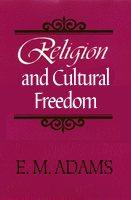

A major philosopher contemplates a culturally responsible religion
A major philosopher contemplates a culturally responsible religion


 A major philosopher contemplates a culturally responsible religion
A major philosopher contemplates a culturally responsible religion

|  |
Religion and Cultural FreedomE. M. Adamscloth EAN: 978-1-56639-051-4 (ISBN: 1-56639-051-6) |
"Maynard Adams has, quite simply, written the best book that I know on the philosophy of religion for our time. He was moved by an exigent demand for some unification in his own cultural dewlling-place between scientism—modernity's religion—and a religion that did not mortify human values and leave the denizens of this culture near insane. This led him through a fifty-year colloquy with the philosophical motifs and values of his time and place. From that terminus a quo he has been led through many books and articles to achieve a unification in this terminus ad quem: Religion and Cultural Freedom. It is a masterpiece."
—William H. Poteat, Professor Emeritus of Religion and Comparative Studies, Duke University
Citing his personal quest to reconcile the contradictions among biblical religion, democratic liberalism, and modern science, E. M. Adams explores the foundations of religion and its role in the culture. He asks, What would constitute a responsible religion in our time? And he determines that for a religion to be credible, its tents must be reconcilable with scientific beliefs, the historical record, the accepted worldview, and the creative, spiritual, and ethical dimensions of human experience.
In Religion and Cultural Freedom, Adams focuses on Judeo-Christian religion in Western civilization, and draws on literary, historical, ethical, and philosophical examples. Maintaining that religion is logically accountable in its belief system to the culture of which it is a part, he illustrates how, at different points in history, religious beliefs have been altered or reinterpreted in response to cultural tensions and conflicts. This interplay between religion and culture is an essential part of Adams's definition of a responsible religion. While he does not think that religion needs to yield to conflicting sectors in the culture, he insists that it has a responsibility to work for coherence and intellectual respectability within a free culture.
During his discussion, Adams offers a realistic theory of the language of the humanities and lived experience (especially the language of value and meaning) and, on the basis of this theory, he reconstructs the intellectual enterprise and interprets meaning and truth in religious discourse. Interested in what he takes to be a negative turn in religious consciousness and the fate of religion in modern Western civilization, Adams concludes that the time may be ripe for a humanistic revolution that would create a fully accountable and intellectually credible religion.
Excerpt available at www.temple.edu/tempress
"Adams makes his case thoroughly, in a clear line of argument that ranges through history as well as theories of religion, metaphysics, morality, and spirituality. Those who reject the claim that science alone can establish what is true, and who see scientific naturalism motivated by dangerous desires for domination will find this work appealing. Those who believe religion should be accountable to the culture, serving the human search for a framework of meaning, will find the goal of this book admirable."
—Michael Barnes, Professor of Religious Studies, University of Dayton
Preface
1. Religion and Culture
The Religious Dimension of Human Consciousness •
The Fundamental Religious Problem •
Modes of Religious Thinking •
Conservative Religion and Cultural Freedom
2. Religion and Cultural Progress
Religion and Science •
Religion and History •
Religion and the Problem of Evil •
Religion and Morality •
Conclusion
3. Religion and Metaphysics
The Nature of Metaphysics •
Religion and the Metaphysics of the Culture •
Classical Arguments for the Existence of God •
The Metaphysics of Modern Western Culture •
Religion and Modern Naturalism
4. Humanism versus Naturalism
Naturalism and Its Difficulties •
The Humanistic Way Out •
The Humanistic Culture •
Human Beings and Society •
A Humanistic Worldview
5. Meaning and Truth in Religious Discourse
Religion and Spirituality •
Spirituality and Self-Centeredness •
Spirituality and the Sacred •
Spirituality and the Holy •
The Holy, the Sacred, and Criticism •
Experience of Higher Realities •
A Cognitive Theory of Myths •
Truth in Religious Myths •
Cognitive Meaning in Religious Discourse
Epilogue
Notes
Index
 | E. M. Adams is Kenan Professor of Philosophy Emeritus at the University of North Carolina at Chapel Hill. He has published ten previous books, including The Metaphysics of Self and World (Temple). |
Philosophy and Ethics
Religion
© 2015 Temple University. All Rights Reserved. This page: http://www.temple.edu/tempress/titles/1008_reg.html.